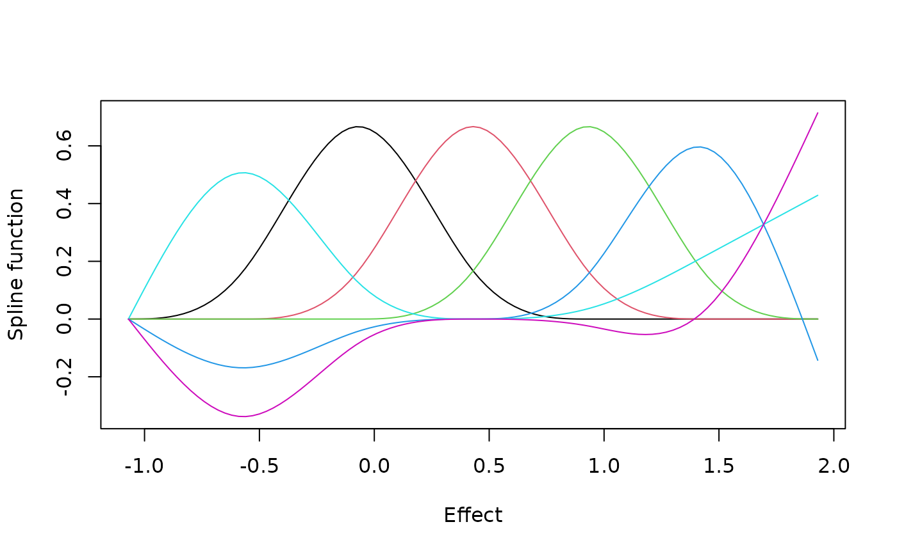

The model represents the distribution of true effects, \(g\), by its
probabilities on a grid of equally spaced points, and takes the logarithm
of those probabilities to be a combination of natural cubic spline
functions. make_efron_grid() builds the grid and the spline basis from
the estimates. bayes_efron_fit() calls it with its arguments
grid_method, L, expansion, M, theta_true and bound_expansion,
so the function is needed on its own only to look at a grid before
fitting.
Usage
make_efron_grid(
theta_hat,
sigma,
L = NULL,
expansion = 0.5,
kappa = NULL,
M = 6L,
grid_method = "paper_realdata",
theta_true = NULL,
bound_expansion = NULL
)Arguments
- theta_hat
Numeric vector of effect estimates, one for each site.
- sigma
Numeric vector of the standard errors of the estimates. All must be positive.
- L
Whole number between 51 and 300, the number of grid points, or
NULL(the default) for 101.- expansion
Number between 0 and 5. With
"paper_realdata"and"kl_target_experimental", the range oftheta_hatis widened on each side byexpansiontimes its width. Defaults to0.5.- kappa
Number greater than 0 and less than 1, used by
"kl_target_experimental"only: it sets the spacing that the method aims at, as described in Details.NULL(the default) means1 / length(theta_hat).- M
Whole number between 3 and 10, the number of spline functions. Defaults to
6L.- grid_method
Character string, the rule for the end points of the grid:
"paper_realdata"(the default),"paper_simulation","paper_sensitivity"or"kl_target_experimental". The Details ofmake_efron_grid()describe them.- theta_true
Numeric vector of the true effects, of the same length as
theta_hat. Needed by"paper_simulation"and"paper_sensitivity", which are for simulations.- bound_expansion
Number greater than 0 and at most 5. With
"paper_sensitivity", the range oftheta_trueis widened on each side bybound_expansiontimes its width.NULL(the default) means 0.5.
Value
A list. grid holds the grid points and B the spline basis, a
matrix with one row for each grid point and M columns. L and M
are the numbers of grid points and spline functions, and grid_method
is the method. expansion is the factor by which the range was widened
(NA for "paper_simulation"), and kappa is NULL unless the method
is "kl_target_experimental". attribution is a list with the rule,
formula, and where it comes from, source.
Details
grid_method chooses where the grid begins and ends. Three of the
methods are the rules of Lee and Sui (2025) and of the code that
accompanies the paper, and one is experimental.
grid_method | End points of the grid | Needs theta_true |
"paper_realdata" | The range of theta_hat, widened on each side by expansion times its width. | No |
"paper_simulation" | The range of theta_true, widened by 0.5 on each side. | Yes |
"paper_sensitivity" | The range of theta_true, widened on each side by bound_expansion times its width. | Yes |
"kl_target_experimental" | As for "paper_realdata"; the number of points is set by kappa. | No |
"paper_realdata" is the method for the analysis of data. The two
methods that need theta_true, the true effects, can be used only in a
simulation, where the true effects are known; they are provided so that
the simulations of the paper can be repeated.
"kl_target_experimental" chooses the number of grid points from the
smallest standard error; L is not used. It takes the smallest number
for which the spacing is no more than
\(2 \min_i(\sigma_i) \sqrt{\exp(2\kappa) - 1}\), but never fewer than
51 or more than 300, so that with small standard errors and a wide range
of estimates the spacing is larger than the formula asks for. The
formula is the one that ebnm::ebnm_scale_npmle() uses with
pointmass = FALSE. There the distribution is a mixture of normal
components, each with a standard deviation of half the spacing, and
\(\kappa\), the argument kappa, bounds the Kullback-Leibler
divergence that this approximation costs when the standard errors are
equal. The model of this package differs in three ways: the distribution
is a set of probabilities on the grid points, for which ebnm has another
formula; it is restricted to the family that the spline functions
define; and the standard errors are in general unequal. The bound has
not been shown to hold under these conditions, so here kappa only sets
how fine the grid is: a smaller value gives a finer grid. A message says
so the first time the method is used in a session. kappa can be set
only in make_efron_grid(); bayes_efron_fit() uses its default.
The basis is splines::ns(grid, df = M, intercept = FALSE). If the
basis and a constant column together do not have full column rank, the
function stops with an error; a smaller M avoids this.
References
Lee, J. and Sui, D. (2025). Fully Bayesian inference for meta-analytic deconvolution using Efron's log-spline prior. Mathematics, 13(16), 2639. doi:10.3390/math13162639
Examples
grid <- make_efron_grid(raudenbush1985$yi, raudenbush1985$sei)
range(raudenbush1985$yi)
#> [1] -0.32 1.18
range(grid$grid)
#> [1] -1.07 1.93
dim(grid$B)
#> [1] 101 6
# The six spline functions on the grid.
matplot(grid$grid, grid$B, type = "l", lty = 1,
xlab = "Effect", ylab = "Spline function")

# A wider grid with more spline functions.
wide <- make_efron_grid(raudenbush1985$yi, raudenbush1985$sei,
expansion = 1, M = 8)
range(wide$grid)
#> [1] -1.82 2.68
# In a simulation the true effects can set the range.
set.seed(1)
theta <- rnorm(50)
theta_hat <- rnorm(50, mean = theta, sd = 0.5)
sim <- make_efron_grid(theta_hat, rep(0.5, 50),
grid_method = "paper_simulation", theta_true = theta)
range(sim$grid)
#> [1] -2.714700 2.095281